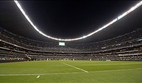
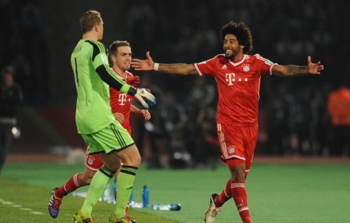

English Premier League

| 1.33 | |
| 0.06 | |
| 26 | |
| 31 |
Based on the criteria laid out to determine the best statistical league in the world, the English Premier League has it all.
The EPL ranked fifth overall in goals per game, second in discipline, second in continental victories and fourth in point differential.
In all but one of those categories, the EPL triumphed over La Liga and the UEFA Champions League.
Domestically, the English are helped by a league with an enormous amount of parity as the gap between first and last is only 31 points.
If you dig deeper, 11 clubs are separated by six points at the bottom of the table, which means table fluctuation is normal in England.
The 26 wins spread across seven clubs presented us with the best wins-per-team average in Europe at 3.71, which was 0.21 higher than the UEFA Champions League and 0.43 more than La Liga.
UEFA Champions League
| 1.28 | |
| 0.8 | |
| 24 | |
| 6 |
The difference between second and third was marginal, but the The difference between second and third was marginal, but the UFEA did beat out La Liga on a few statistics.
Right away, the first stat that the UEFA Champions League has a strong advantage in is goals per game, a number that is not held down by the bottom half of the table in Germany.
All but three clubs in Germany have scored over 20 goals this season. The three teams that have failed to score that many are all in the relegation zone.
At the European level, the Germans may have two fewer wins than the Spanish, but they also have one less team in the two continental competitions.
The point differential also played in favor of the Germans despite having two fewer teams in their domestic league.
If you were to take away the bottom two in Spain from the table, the Germans would still have a better point differential, albeit by just one point.
La Liga
| 1.49 | |
| 0.12 | |
| 39 | |
| 33 |
Spain has long been known for being a two or three-club league, which is a factor that may have hurt them a little bit as the difference between the top three leagues was minimal.
The point differential from Atletico Madrid to Real Betis in the league table is 39, while the gap between first and fourth place is 14.
Scoring goals is no issue for the top three clubs in the league, who average between 2.5 and 2.7 goals per game, but there is a problem when it comes to scoring at the bottom of the table, which explains the league average of
1.45 goals per game.
The one positive that the top three of Atletico Madrid, Barcelona and Real Madrid bring to the table here is their continental wins, which total 14 between the trio.
Valencia and Sevilla also won their group titles in the Europa League, making La Liga a big-time threat in the knockout rounds of both competitions, a quality that helped them earn this third-place ranking.
Ukrainian Premier League
| 1.26 | |
| 0.04 | |
| 12 | |
| 33 |
You may be surprised at first when seeing the Ukrainian Premier League this high on the list, but after a deep look, they do have a strong and enjoyable domestic league based on the stats.
The average of 1.26 goals per game played was right in the middle of the pack when judging the 10 leagues on the list, but what really stuck out was the discipline of all 16 clubs in the Eastern European league.
Only 11 red cards have been handed out this season in Ukraine, which is the lowest amount across all leagues that were evaluated.
Another thing that stands out about Ukrainian football is that their teams do put up a good showing in Europe as represented by their 12 wins on the continental level this season.
While Shakhtar Donetsk did not star in the UEFA Champions League, Chornomorets Odesa, Dynamo Kyiv and Dnipro all finished second in their respective groups in the UEFA Europa League.
All four of those clubs will enter the Europa League knockout stage in February with a good chance to advance far in the tournament.
Eredivisie
| 1.71 | |
| 0.13 | |
| 7 | |
| 22 |
Believe it or not, the Dutch top flight came in first in two statistical categories: goals per game and point differential.
While the Dutch certainly have an entertainment factor to their domestic football, they also have some volatility in it too as they had the second-highest red cards per game of the 10 leagues on the list.
The one major downfall of the Dutch league is that it fails to translate on the European level as they have just two teams left in continental competition in Ajax and AZ, both of whom are in the Europa League.
Had the Dutch teams been able to handle their own in Europe, they may have sneaked into the top three, or even higher.
Liga MX
| 1.23 | |
| 0.10 | |
| 19 | |
| 26 |
Since the latest edition of the Mexican Clausura just began a few weeks ago, we decided to examine the Apertura season to give the North American league a fair shake in this discussion.
In the 18-team Apertura, three teams, America, Santos Laguna and Toluca, all scored over 30 goals in just 17 games.
The one unique thing about Liga MX is that they have teams compete in both the Copa Libertadores and the CONCACAF Champions League.
In the Copa Libertadores, two sides advanced to the group stage with Tijuana going all the way to the quarterfinals before being knocked out by Atletico Mineiro.
In the CONCACAF Champions League, three Mexican sides are in the quarterfinal stage by way of winning their respective groups in dominant fashion.
Argentine Primera
| 1.08 | |
| 0.10 | |
| 18 | |
| 27 |
Some may argue that the Brazilian league is superior, but the counter argument to that is the consistency of the Argentinian league.
In the first 19 games of the 2013-14 season, the 20 clubs were separated by 27 points, but that total would have been even less had last-place Colon not been docked six points.
While the number of goals per game may not excite many, the games in Argentina so far this season have been close and that is shown by the top eight clubs being within four points of one another.
On the continental level, Argentina had two quarterfinalists at the 2013 Copa Libertadores, Boca Juniors and Newell's Old Boys, who played each other in the final eight with Newell's Old Boys coming out on top.
Brasileirao
| 1.23 | |
| 0.09 | |
| 23 | |
| 56 |
The domestic league with the highest point differential that we examined was the Brasileirao.
An eye-popping 56 points was the difference between 2013 winners Cruziero and 20th-place finishers Nautico.
Despite the lack of parity at the domestic level, Brazilian clubs did work wonders at the 2013 Copa Libertadores with five clubs reaching the knockout phase.
Of those five clubs, Atletico Mineiro ended up as the South American champion with Fluminense being the only other side reaching the quarterfinals.
While they did have a successful group campaign at the continental level, Brazil's best clubs not named Atletico Mineiro could not get the job done when it mattered most.
Serie A
| 1.38 | |
| 0.14 | |
| 15 | |
| 39 |
Look away now, fans of Serie A, as your favorite league is down in ninth place on this list.
The two main reasons for the Italian top flight ranking this low are the high amount of red cards and massive gulf in class from top to bottom in the table.
Out of all the leagues examined, Serie A had the worst red card rate with 52 total ejections across 380 games in the 2013-14 campaign.
Coincidence or not, the league with the highest red card percentage was also one of the worst in terms of point differential.
Out of the top European leagues, the 39 points currently separating Juventus and Catania was the one of the worst.
Luckily, a few other leagues across the pond in North and South America beat the Italians to the title of highest point differential.
Regardless, Serie A's lack of discipline hurt them in a massive way as the momentum in numerous games was shifted because of red cards.
Criteria
| 1.50 | |
| 0.19 | |
| 15 | |
| 49 |
There are so many statistics that you can choose from nowadays to decipher whether a league is good or not.
Instead of making a deep dive into how many successful tackles or aerial duels were won by each team in each league, we decided to look at some of the stats that matter most.
The four statistics looked at for this ranking were goals per games played, red cards per games played, continental victories and point differential from first to last.
Goals bring the entertainment factor to world football and there is no denying that they are the ultimate game-changer. For this list, the number of goals scored were divided by the total number of games played in each league.
Red cards were selected to see how disciplined a certain league is. As we all know, red cards can shift matches on their head, which meant whatever league had the most red cards per games played was at a disadvantage.
Continental wins were used to determine how great the clubs in one domestic league were against top clubs from other leagues, while point differential measured the amount of parity in a single league as it counted the difference
in points from first to last in the league table.
Bundesliga
| 1.55 | |
| 0.21 | |
| 18 | |
| 33 |
There are so many statistics that you can choose from nowadays to decipher whether a league is good or not.
The difference between second and third was marginal, but the Bundesliga did beat out La Liga on a few statistics.
Right away, the first stat that the Bundesliga has a strong advantage in is goals per game, a number that is not held down by the bottom half of the table in Germany.
All but three clubs in Germany have scored over 20 goals this season. The three teams that have failed to score that many are all in the relegation zone.
At the European level, the Germans may have two fewer wins than the Spanish, but they also have one less team in the two continental competitions.
Red cards were selected to see how disciplined a certain league is. As we all know, red cards can shift matches on their head, which meant whatever league had the most red cards per games played was at a disadvantage.
Continental wins were used to determine how great the clubs in one domestic league were against top clubs from other leagues, while point differential measured the amount of parity in a single league as it counted the difference
in points from first to last in the league table.